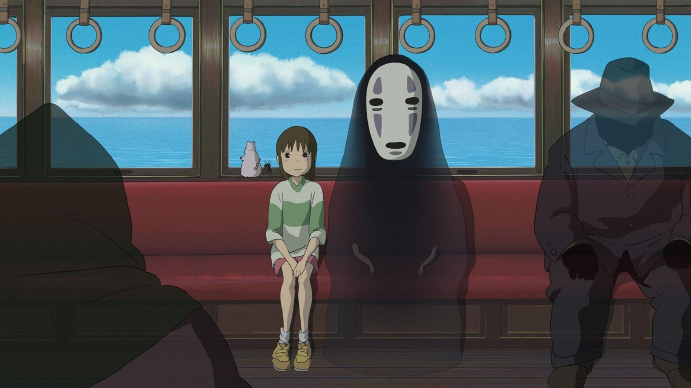

About
No-Face is awesomed! He's an anime spirit bad guy who travels the length of the bath house to prove that he's an impressionable guy.
No-face and Chihiro riding the train
No-face's Characteristics
- He's got big teeth
- He's treated as bad-ass
- He's trying to be a good guy.
No-face's friends
No-face has few frineds. I think Chihiro is his closest friend. She's awesome. Click on the links below to read more about them.